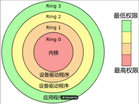
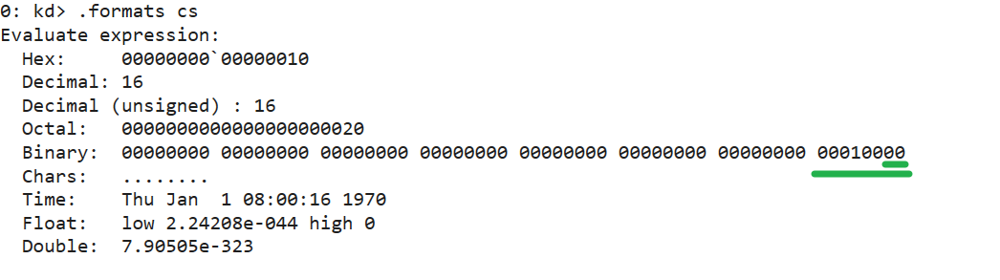
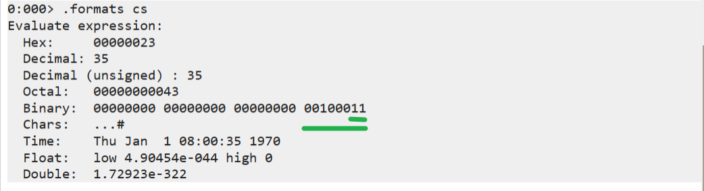
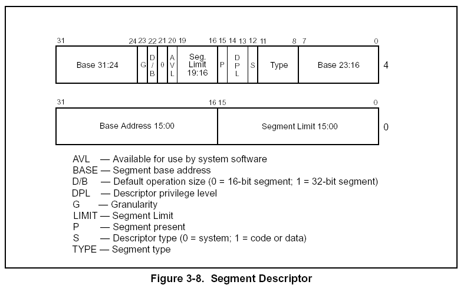
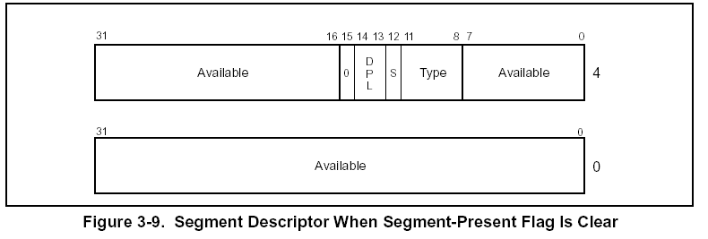
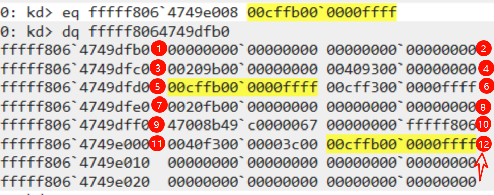

概述：B 站公开教程的学习笔记 [内核学习_哔哩哔哩_bilibili](https://www.bilibili.com/video/BV11ktWezE9c?vd_source = 2d8da596010444663e6f18397a9e3505&spm_id_from = 333.788.videopod.episodes)
相关参考
段权限检查
CPU 分级

GDT 与 LDT
判断当前程序处于哪一环
查看当前程序处于哪一环，可查看 CS 和 SS 中存储的段选择子的后 2 位。如下所示：
查看 CS 寄存器二进制的后两位
-
0 环 可以看到
cs寄存器后两位为 0
-
3 环
可以看到
cs寄存器后两位为 11，也就是 3
段描述符结构
这个结构体的内容在后边学习过程中非常重要。这一部分可以详细看 《Intel 开发手册》中的相关描述。

基地址域
确定该段的第 0 字节在 4GB 线性空间中的位置。处理器将这 3 个及地址域组合在一起构成了一个 32 位地址值。段基址应当是 16 自己额边界对其的。16 字节边界对齐不是必须的，但这种段边界的对齐能够使程序的性能最大化。
类型域
指明段或者门的类型，确定段的范围权限和增长方向。如何解释这个域，取决于该描述符是应用描述符（代码或数据）还是系统描述符，这由描述符类型标志（S 标记）所确定。代码段，数据段和系统段对类型域有不同的意义。
S（描述符类型）标志
确定段描述符是系统描述符（S 标记为 0）或者代码，数据段描述符（S 标记为 1）。
DPL（描述符特权级）域
指明该段的特权级。特权级从 0~3，0 为最高特权级。DPL 用来控制对该段的访问。关于代码段的 DPL 与 CPL 关系以及选择符的 RPL 可以参考后文描述 特权级 相关内容。
P（段存在）标志
标志出该段当前是否在内存中（1 表示在内存中，0 表示不在）。当指向该段描述符的段选择符装载入段寄存器时，如果这个标志为 0，处理器会产生一个段不存在的异常（NP）。内存管理软件可以通过这个标志，来控制在某个特定时间有哪些段时真正的被载入物理内存，这样对于管理虚拟内存而言，除了分页机制还提供了另外一种控制方法。
D/B（默认操作数大小/默认栈指针大小和/或上限）标志
根据这个段描述符所指的是一个可执行代码段，一个向下扩展的数据段还是一个堆栈段，这个标志完成不同的功能。（对 32 位的代码和数据段，这个标志总是被置为 1，而 16 位的代码和数据段，这个标志总是被置为 0）
-
可执行代码段
这个标志被称为 D 标志，它指明该段中的指令所涉及的有效地址值的缺省位位数和操作符的缺省位位数。如果该标志为 1，缺省为 32 位的地址，32 位或者 8 位的操作符；若为 0，缺省为 16 位的地址，16 位或者 8 位的操作符。指令前缀 66H 可以指定操作符的长度而不使用缺省长度。用前缀 67H 来指定地址值长度。
-
堆栈段
这个标志被称为 B（big）标志，它为隐含
的栈操作（如 push，pop 和 call）确定栈指针值的位位数。如果该标志为 1，则使用的是 32 位的栈指针，该指针放在 32 位的 ESP 寄存器中；若该标志为 0，则使用的是放
在 16 位 SP 寄存器中的 16 位的栈指针。如果该堆栈段为一个向下扩展的数据段（见下一段的说明），B 标志还确定了该堆栈段的地址上界。
-
向下扩展的数据段
这个标志称为 B 标志，它确定了该段的地址上界。如果该标志为 1，段地址上界为 FFFFFFFFH（4GB）；若该标志为 0，段地址上界为 FFFFH（64KB）。

G（粒度）标志
确定段限长扩展的增量。当 G 标志为 0，段限长以自己额为单位；G 标志为 1，段限长以 4KB 为单位。（这个标志不影响段基址的粒度，段基址的粒度永远是字节）如果 G 标志位 1，那么当检测偏移量是否超越段限长时，不用测试偏移量的低 12 位。例如，如果 G 标志位 1，0 段限长意味着有效偏移量为从 0 到 4095。
可用及保留的位 s
段描述符的第二个双字的 20 位可以被系统软件使用，21 位被保留，并且应该设置为 0。
特权级
CPL(Current Privilege Level)
当前特权级
DPL(Descriptor Privilege Level)
描述符特权级别
DPL 存储在段描述符中，规定了访问该段所需要的特权级别是什么。
举例说明
mov DS, AX
如果 AX 指向的段 DPL = 0，但当前程序的 CPL = 3，这行指令是不会成功的！
RPL(Request Privilege Level)
请求特权级别
RPL 是针对段选择子而言的，每个段的选择子都有自己的 RPL。
举例说明：
Mov ax,0008 与 Mov ax,000B # 段选择子
# 0008 的 RPL 是 0
# 000B 的 RPL 是 3
Mov ds,ax 与 Mov ds,ax # 段描述符数据段的权限检查
参考如下代码：
# 加入当前程序在 0 环，也就是说 CPL = 0
Mov ax,000B # 1011 RPL = 3
MOv ds,ax # ax 指向的段描述符的 DPL=0数据段的权限检查：
并且 （数值上的比较）
注意
代码段和系统段描述符中的检查方式并不一样。
代码跨段跳转
段寄存器
ES、CS、SS、DS、FS、GS、LDTR、TR
段寄存器读写
除 CS 外，其他的段寄存器都可以通过 MOV、LES、LSS、LDS、LFS、LGS 指令进行修改
CS 为什么不可以直接修改呢？
CS 的改变意味着 EIP 的改变，改变 CS 的同时必须修改 EIP，所以我们无法使用上面的指令来进行修改。
代码间的跳转（段间跳转、非调用门之类的）
段间跳转有两种情况
要跳转的段是：
- 一致代码段 比如：操作系统提供了一些通用代码以便于应用层使用，则可以使用一致代码段
- 非一致代码段
查看 gdt 表
r gdtr同时修改 CS 与 EIP 的指令
JMP FAR / CALL FAR / RETF / INT / IRETED
注意
只改变 EIP 的指令
JMP / CALL / JCC / RET
代码间的跳转（段间跳转、非调用门之类的）执行流程
JMP 0x20:0x004183D7CPU 如何执行这行代码？
执行上述代码时，分为以下 5 个步骤：
-
段选择子拆分
0x20对应的二进制形式0000 0000 0010 0000- RPL = 00
- TI = 0
- index = 4
-
查表得到段描述符
- TI = 0 所以查 GDT 表
- Index = 4 找到对应的段描述符
四种情况可以跳转：代码段、调用门、TSS 任务段、任务门
-
权限检查
- 非一致代码段：要求 &&
- 一致代码段： 要求：
-
加载段描述符 通过上面的权限检查后，CPU 会将段描述符加载到 CS 段寄存器中
-
代码执行 CPU 将
CS.Base + Offset的值写入EIP，然后执行CS:EIP处的代码，段间跳转结束。
本节总结
对于一致代码段：也就是共享的段
- 特权级高的程序不允许访问特权级低的数据：核心态不允许访问用户态的数据
- 特权级低的程序可以访问到特权级高的数据，但特权级不会改变：用户态还是用户态
对于普通代码段：也就是非一致代码段
- 只允许同级访问
- 绝对禁止不同级别的访问：核心态不是用户态，用户态也不是核心态
代码段跳转实操
构造段描述符
找一个非一致代码段描述符，复制一份，写入到 GDT 表中
第 5 位为 9 或者 f 的时候一定是非一致代码段
0: kd> r gdtr
gdtr=fffff8064749dfb0
0: kd> dq fffff8064749dfb0
fffff806`4749dfb0 00000000`00000000 00000000`00000000
fffff806`4749dfc0 00209b00`00000000 00409300`00000000
fffff806`4749dfd0 00cffb00`0000ffff 00cff300`0000ffff
fffff806`4749dfe0 0020fb00`00000000 00000000`00000000
fffff806`4749dff0 47008b49`c0000067 00000000`fffff806
fffff806`4749e000 0040f300`00003c00 00000000`00000000
fffff806`4749e010 00000000`00000000 00000000`00000000
fffff806`4749e020 00000000`00000000 00000000`00000000修改 fffff806749e008 位置的内容：
0: kd> eq fffff806`4749e008 00cffb00`0000ffff
0: kd> dq fffff8064749dfb0
fffff806`4749dfb0 00000000`00000000 00000000`00000000
fffff806`4749dfc0 00209b00`00000000 00409300`00000000
fffff806`4749dfd0 00cffb00`0000ffff 00cff300`0000ffff
fffff806`4749dfe0 0020fb00`00000000 00000000`00000000
fffff806`4749dff0 47008b49`c0000067 00000000`fffff806
fffff806`4749e000 0040f300`00003c00 00cffb00`0000ffff
fffff806`4749e010 00000000`00000000 00000000`00000000
fffff806`4749e020 00000000`00000000 00000000`00000000写完后可以查看下写入是否成功。
在 OD 中进行测试
添加成功后，我们要尝试跳转到刚刚添加的段描述符的位置，这里我还是画图示意一下哎，我修改的是低 12 位，下标为 11。对应的二进制为 1011，后三位为 RPC，对应的二进制为 11，所以总的描述符号二进制为：
0000 0000 0101 1011，也就是 0x005B

在 OD 中，执行跨段跳转 JMP FAR 005B:008F94A0
9-4B-0000 0000 0100 1011
11- - 0000 0000 0101 1011